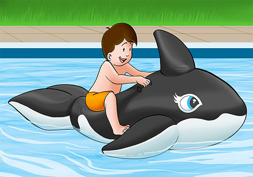

Las preposiciones de lugar son aquellas que expresan la posición exacta en la que se encuentra un elemento (persona, objeto, animal, etc.).
| IN (en / dentro de) | ON (sobre / encima de) | ||
|---|---|---|---|
|  | |||
| The clock is in the box. - El reloj está dentro de la caja. | The kid is on the whale. - El niño está encima de la ballena. |
| UNDER (debajo de / bajo) | NEXT TO (al lado de) | ||
|---|---|---|---|
 |
|||
| The baby's dummy is under the table. - El chupete del bebé está bajo/debajo de la mesa. | The cinema is next to the restaurant. - El cine está al lado del restaurante. |
| IN FRONT OF (delante de) | BEHIND (detrás de) | ||
|---|---|---|---|
 |
|||
| The girl is in front of the sheep. - La chica está delante de las ovejas. | The boy is behind the curtains. - El chico está detrás de las cortinas. |
| BETWEEN (entre dos cosas) | AROUND (alrededor de) | ||
|---|---|---|---|
| My car is between those two trees. - Mi coche está entre esos dos árboles. | These cats are around the rubbish bin. - Estos gatos están alrededor del cubo de la basura. |
| ABOVE (encima / por encima de) | BELOW (debajo de / bajo) | ||
|---|---|---|---|
| The balloon is above the table. - El globo está por encima de la mesa. | The table is below the lamp. - La mesa está debajo de la lámpara. |
| OVER (encima de / por encima de / sobre) | AMONG (encima / por encima de) | ||
|---|---|---|---|
| The athlete is jumping over the hurdle. - El atleta está saltando por encima de la valla. | The rabbit is among the boxes. -El conejo está entre las cajas. |
| BY / BESIDE (al lado de / junto a) | OPPOSITE (frente a / enfrente de) | ||
|---|---|---|---|
| She is sitting by/beside her bed. - (Ella) Está sentada junto a la cama. | The boy is sitting opposite the girl. -El chico está sentado frente a la chica. |
| ACROSS (al otro lado de) | |
|---|---|
| The bank is across the street from the saloon. -El banco está al otro lado de la calle desde el bar. |